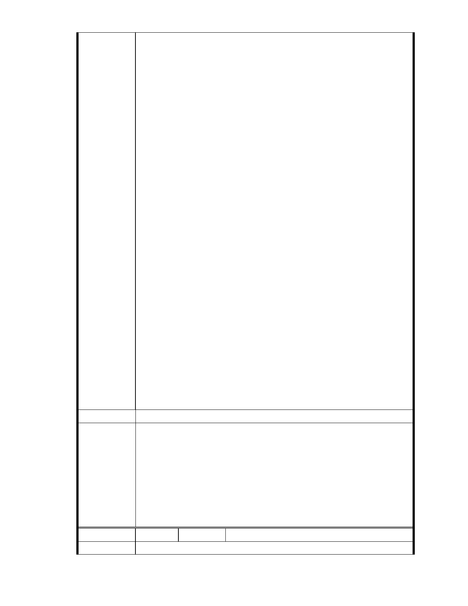

避免變更案過關所造成的災害風險。
廣告內容將慈濟和保護區列為台灣最寶貴的兩件資產，質疑慈濟信眾
以環保之名，在保護區上開發。廣告中也提到慈濟如何巧立名目讓審
查報告看起來可行，卻完全忽略其社會地位所帶來的連動效應。居民
及環團擔憂，台北市保護區在未進行通盤檢討之前，慈濟內湖基地地
質條件過度敏感，若能解編將造成更大規模的保護區瓦解。
與慈濟內湖園區比鄰而居 30 多年的葉先生及蘇小姐表示，過去因感佩
慈濟在環保及救災志業上的努力，而成為慈濟的長期捐款者。然而直
至今年 11 月才得知自己多年來所捐之善款，竟被用於大興土木、破壞
保護區。葉先生沉痛表示，站在善意的立場，將原本計畫給慈濟的部
分善款捐出刊廣告，希望慈濟能回頭是岸。
除此，大湖地區居民也紛紛響應，拿出買菜錢、學生的打工所得，一
點一滴湊足廣告費用，順利於 6 日台北市政府都委會審議慈濟內湖案
當天登出。內湖保護區守護聯盟發言人劉德正呼籲民眾在慈濟悔改
前，不要捐款給慈濟。
綠黨召集人潘翰聲也質疑，慈濟一直強調這片保護區被破壞的現況，
在填掉溼地之後，慈濟郤再桶上最後一腳，蓋起水泥大樓。慈濟要做
真正的環保表率，把此地復育為溼地，對所有開發商正面宣告，而非
把保護區破壞殆盡之後，再透過政治施壓變更地目圖取暴利。綠黨政
策部主任李盈萱表示，台北市長郝龍斌曾任環保署長，應為環保表率
立即停止審查慈濟開發案，否則不僅賠上都委會委員們的學術聲譽 ,
也把慈濟從國際上的環保模範生變成蠻橫開發商，重創台灣的國際形
象。
建議辦法
市府說明
一、本案申請範圍於慈濟購得前已遭非法填土，實不具保護區之功能，
今申請單位欲興辦社會福利事業，故依法辦理都市計畫變程序；目
前申請方案較先前方案已大幅降低開發強度、調整使用項目並承諾
大面積滯洪設施等回饋事項，顯示申請單位欲改善現況之誠意。
二、相關陳情意見將納入本案審查人民意見，依法定程序辦理。
三、後續審理程序將要求申請人加強與在地區民、社會大眾，就基地現
況、規劃方案及環境助益作為等方面加強溝通。
委 員 會 決 議 同編號 1。
編
號 92
陳情人 台北市內湖保護區守護聯盟 張淑媛
陳 情 理 由 請考量財團法人中華民國佛教慈濟慈善基金會過去十餘年，公然將公有
- 79 -